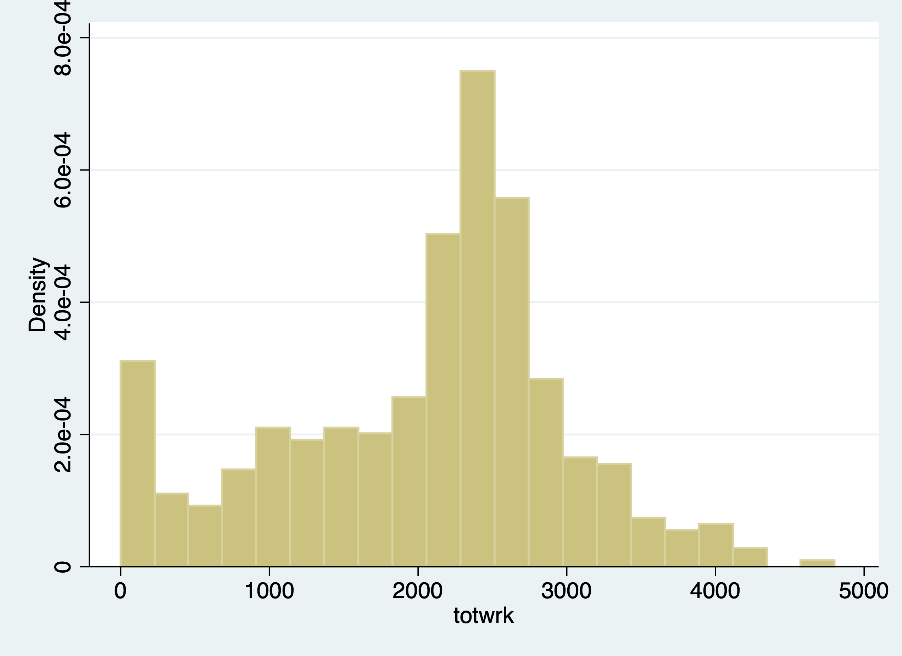
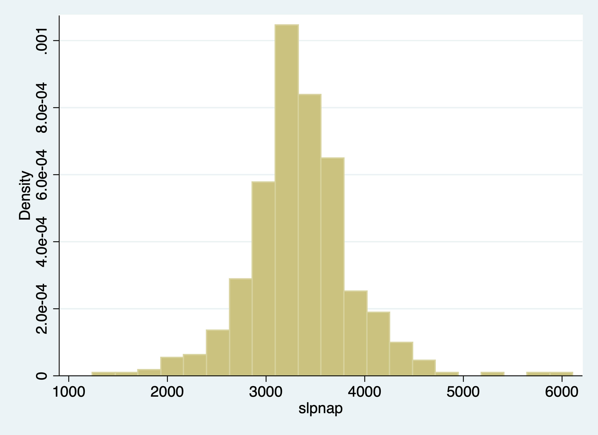
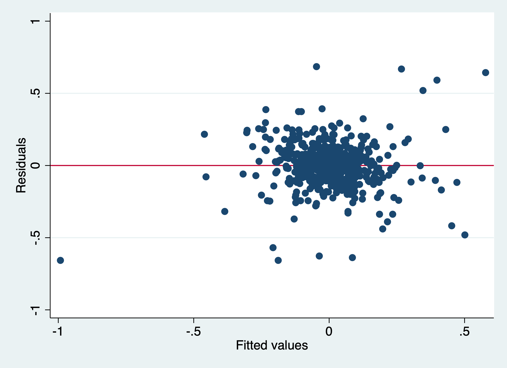

Chapter 2 Panel Data Part 1 - Pooled Data and First Difference
We will cover the implementation of two estimators today: 1. Pooled OLS Estimator 2. First Difference Estimator
2.1 Pooled OLS Estimator
We can account for \(a_t\) with our Pooled OLS estimator.
2.1.1 Fertility over time
Lesson: Time binaries can capture secular trends over time or trends that affect all people during the time period.
Sander (1992) uses the National Opinion Research Center’s General Social Survey for the veven users from 1972 to 1984. We’ll use these data to explain the total number of kids born to a women. Let’s get our data.
One question of interest: What happens to ferlity rates over time after controlling for observable factors? We’ll control for education, age, race, region at 16 years old, and living environment at 16.
We’ll use 1972 as our base year (which we will exclude and be captured in the intercept).
\[ \begin{aligned} kids_{i,t} = \beta_0 + \beta_1 educ_{i,t} + \beta_2 age_{i,t} + \beta_3 age^2_{i,t} + \beta_4 Black_{i} + \beta_5 East_{i,t} + \beta_6 NorthCentral_{i,t} \\ + \beta_7 West_{i,t} + \beta_8 Farm_{i,t} + \beta_9 OtherRural_{i,t} + \beta_{10} Town_{i,t} + \beta_{11} SmallCity_{i,t} + a_{t} \end{aligned} \]
First, we’ll estimate the regression without Time Trends
est clear
eststo OLS: reg kids educ c.age##c.age i.black i.east i.northcen i.west i.farm i.othrural i.town i.smcity Source | SS df MS Number of obs = 1,129
-------------+---------------------------------- F(11, 1117) = 11.52
Model | 314.471892 11 28.5883539 Prob > F = 0.0000
Residual | 2771.03741 1,117 2.4807855 R-squared = 0.1019
-------------+---------------------------------- Adj R-squared = 0.0931
Total | 3085.5093 1,128 2.73538059 Root MSE = 1.5751
------------------------------------------------------------------------------
kids | Coef. Std. Err. t P>|t| [95% Conf. Interval]
-------------+----------------------------------------------------------------
educ | -.1428788 .018351 -7.79 0.000 -.1788851 -.1068725
age | .5624223 .1396257 4.03 0.000 .2884641 .8363804
|
c.age#c.age | -.0060917 .0015793 -3.86 0.000 -.0091903 -.002993
|
1.black | .977559 .173188 5.64 0.000 .6377485 1.31737
1.east | .2362931 .1340365 1.76 0.078 -.0266987 .4992849
1.northcen | .3847487 .1222117 3.15 0.002 .1449583 .6245391
1.west | .2447027 .1686052 1.45 0.147 -.0861158 .5755212
1.farm | -.054186 .1486156 -0.36 0.715 -.3457832 .2374112
1.othrural | -.1670751 .1773583 -0.94 0.346 -.5150681 .1809178
1.town | .0842369 .1257038 0.67 0.503 -.1624053 .3308792
1.smcity | .1830768 .1620166 1.13 0.259 -.1348143 .500968
_cons | -8.487543 3.068381 -2.77 0.006 -14.50798 -2.467104
------------------------------------------------------------------------------Next, we account for time trends by including Time Fixed Effects
eststo Pooled_OLS: reg kids educ c.age##c.age i.black i.east i.northcen i.west i.farm i.othrural i.town i.smcity i.y74 i.y76 i.y78 i.y80 i.y82 i.y84 Source | SS df MS Number of obs = 1,129
-------------+---------------------------------- F(17, 1111) = 9.72
Model | 399.610888 17 23.5065228 Prob > F = 0.0000
Residual | 2685.89841 1,111 2.41755033 R-squared = 0.1295
-------------+---------------------------------- Adj R-squared = 0.1162
Total | 3085.5093 1,128 2.73538059 Root MSE = 1.5548
------------------------------------------------------------------------------
kids | Coef. Std. Err. t P>|t| [95% Conf. Interval]
-------------+----------------------------------------------------------------
educ | -.1284268 .0183486 -7.00 0.000 -.1644286 -.092425
age | .5321346 .1383863 3.85 0.000 .2606065 .8036626
|
c.age#c.age | -.005804 .0015643 -3.71 0.000 -.0088733 -.0027347
|
1.black | 1.075658 .1735356 6.20 0.000 .7351631 1.416152
1.east | .217324 .1327878 1.64 0.102 -.0432192 .4778672
1.northcen | .363114 .1208969 3.00 0.003 .125902 .6003261
1.west | .1976032 .1669134 1.18 0.237 -.1298978 .5251041
1.farm | -.0525575 .14719 -0.36 0.721 -.3413592 .2362443
1.othrural | -.1628537 .175442 -0.93 0.353 -.5070887 .1813814
1.town | .0843532 .124531 0.68 0.498 -.1599893 .3286957
1.smcity | .2118791 .160296 1.32 0.187 -.1026379 .5263961
1.y74 | .2681825 .172716 1.55 0.121 -.0707039 .6070689
1.y76 | -.0973795 .1790456 -0.54 0.587 -.448685 .2539261
1.y78 | -.0686665 .1816837 -0.38 0.706 -.4251483 .2878154
1.y80 | -.0713053 .1827707 -0.39 0.697 -.42992 .2873093
1.y82 | -.5224842 .1724361 -3.03 0.003 -.8608214 -.184147
1.y84 | -.5451661 .1745162 -3.12 0.002 -.8875846 -.2027477
_cons | -7.742457 3.051767 -2.54 0.011 -13.73033 -1.754579
------------------------------------------------------------------------------Exclusion Restriction Test
( 1) 1.y74 = 0
( 2) 1.y76 = 0
( 3) 1.y78 = 0
( 4) 1.y80 = 0
( 5) 1.y82 = 0
( 6) 1.y84 = 0
F( 6, 1111) = 5.87
Prob > F = 0.0000We reject the null hypothesis that our combined time binaries are 0 with an F-stat (1,111 degrees of freedom) equal to 5.87.
Display
esttab OLS Pooled_OLS, mtitles se scalars(F r2) drop(0.black 0.east 0.northcen 0.west 0.farm 0.othrural 0.town 0.smcity 0.y74 0.y76 0.y78 0.y80 0.y82 0.y84) (1) (2)
OLS Pooled_OLS
--------------------------------------------
educ -0.143*** -0.128***
(0.0184) (0.0183)
age 0.562*** 0.532***
(0.140) (0.138)
c.age#c.age -0.00609*** -0.00580***
(0.00158) (0.00156)
1.black 0.978*** 1.076***
(0.173) (0.174)
1.east 0.236 0.217
(0.134) (0.133)
1.northcen 0.385** 0.363**
(0.122) (0.121)
1.west 0.245 0.198
(0.169) (0.167)
1.farm -0.0542 -0.0526
(0.149) (0.147)
1.othrural -0.167 -0.163
(0.177) (0.175)
1.town 0.0842 0.0844
(0.126) (0.125)
1.smcity 0.183 0.212
(0.162) (0.160)
1.y74 0.268
(0.173)
1.y76 -0.0974
(0.179)
1.y78 -0.0687
(0.182)
1.y80 -0.0713
(0.183)
1.y82 -0.522**
(0.172)
1.y84 -0.545**
(0.175)
_cons -8.488** -7.742*
(3.068) (3.052)
--------------------------------------------
N 1129 1129
F 11.52 9.723
r2 0.102 0.130
--------------------------------------------
Standard errors in parentheses
* p<0.05, ** p<0.01, *** p<0.001We can see most our time coefficient are not statistically significant but we do reject the null hypothesis that they are all equal to 0. If we compare 1982 and 1984 to 1972, women estimated to have about 0.52 fewer and 0.55 fewer children, respectively. This means that in 1982 100 women are expected to have 52 fewer children than 100 women in 1972.
Note: Since we are controlling for education, this decline in fertility cannot be attributed to increases in education. The difference is a secular trend or a general trend that transcends across all women.
Note: We have age and age-squared, which means that the number of children increases with age, but at a diminishing rate. At one point age will become 0.
Breusch-Pagan / Cook-Weisberg test for heteroskedasticity
Ho: Constant variance
Variables: fitted values of kids
chi2(1) = 26.28
Prob > chi2 = 0.0000Note that we reject the null hypothesis of homoskedasticity with a Breusch-Pagan Test, so we should use our heteroskedastic-robust standard errors
est clear
eststo Without_Robust: quietly reg kids educ c.age##c.age i.black i.east i.northcen i.west i.farm i.othrural i.town i.smcity i.y74 i.y76 i.y78 i.y80 i.y82 i.y84
eststo With_Robust: quietly reg kids educ c.age##c.age i.black i.east i.northcen i.west i.farm i.othrural i.town i.smcity i.y74 i.y76 i.y78 i.y80 i.y82 i.y84, robust
esttab Without_Robust With_Robust, mtitles se scalars(F r2) drop(0.black 0.east 0.northcen 0.west 0.farm 0.othrural 0.town 0.smcity 0.y74 0.y76 0.y78 0.y80 0.y82 0.y84) (1) (2)
Without_Ro~t With_Robust
--------------------------------------------
educ -0.128*** -0.128***
(0.0183) (0.0211)
age 0.532*** 0.532***
(0.138) (0.139)
c.age#c.age -0.00580*** -0.00580***
(0.00156) (0.00158)
1.black 1.076*** 1.076***
(0.174) (0.201)
1.east 0.217 0.217
(0.133) (0.127)
1.northcen 0.363** 0.363**
(0.121) (0.117)
1.west 0.198 0.198
(0.167) (0.163)
1.farm -0.0526 -0.0526
(0.147) (0.146)
1.othrural -0.163 -0.163
(0.175) (0.181)
1.town 0.0844 0.0844
(0.125) (0.128)
1.smcity 0.212 0.212
(0.160) (0.154)
1.y74 0.268 0.268
(0.173) (0.188)
1.y76 -0.0974 -0.0974
(0.179) (0.200)
1.y78 -0.0687 -0.0687
(0.182) (0.198)
1.y80 -0.0713 -0.0713
(0.183) (0.194)
1.y82 -0.522** -0.522**
(0.172) (0.188)
1.y84 -0.545** -0.545**
(0.175) (0.186)
_cons -7.742* -7.742*
(3.052) (3.071)
--------------------------------------------
N 1129 1129
F 9.723 10.19
r2 0.130 0.130
--------------------------------------------
Standard errors in parentheses
* p<0.05, ** p<0.01, *** p<0.001Question: do you think the number of kids is distributed normally?
2.1.2 Changes in the Returns to Education and the Sex Wage Gap
Lesson: Interactions matter. We can manually create interactions, but that can be cumbersome. Using the # operator, we can generate interactions within our regression command.
Stata interactions: i.var1##i.var2, i.var1##c.var3, c.var3##c.var4
We can estimate to see how the wage gap and returns to schooling have compared for women. We pool data from 1978 and 1985 from the Current Population Survey.
What we will do to estimate the wage gap and the returns to education between 1978 and 1985. We can do this by interacting our binary variable y85 with our continuous variable of education. Our coefficient on edu will be the returns to education in 1978 and the return to education in 1985 will be captured in the coefficient for edu#1.y85 plus the coefficient for edu in 1978. The coefficient for edu#1.y85 will be relative to the coefficient on edu, so we can add the two coefficients to find the returns to education in 1985.
We also interact our binary variable y85 with another binary variable female to see the wage gap in 1978 and 1985. 1.female will be the wage gap in 1978 and 1.female#1.y85 plus the 1.female will be our wage gap for females in 1985.
Wages will have changed between 1978 and 1985 due to inflation, since wages in the CPS are in nominal dollars. We can deflate our wages with a price deflator, or we can use natural log of wages with time binaries to capture inflation that is associated with the year binaries.
Natural Log and accounting for inflation with time variables. Let’s say our deflator for 1985 is 1.65, so we need to divide wages by the deflator to get real wages in 1978 dollars. But if we take the natural log transformed wages using real or nominal wages does not matter since the inflation factor will be absorbed in the time binary y1985:
\[ ln(wage_i/P85)=ln(wages_i)-ln(p85) \]
While wages may differ across individuals in 1985, all individuals in 1985 are affected by the secular trend of inflation relevant to 1985. (Note: if the price trends varied by region, then we would need to account for this since prices would not be a secular trend affecting all people).
We need both ln(wages) and time binaries, otherwise our estimates would be biased.
Note: that this remains true whether the nominal value is in the dependentor independent variables as long as it is natural log transformed and has time binaries.
\[ ln(wage_{i,t}) = \beta_0 + \beta_1 edu_{i,t} + \beta_2 exp_{i,t} + \beta_3 exp^2_{i,t} + \beta_4 union_{i,t} + \beta_5 female_{i} + \\ \beta_6 edu_{i,t}*Y85_t + \beta_7 female_i*Y85_{t} +\beta_8 Y85_{t} + \varepsilon_{i,t} \]
Source | SS df MS Number of obs = 1,084
-------------+---------------------------------- F(8, 1075) = 99.80
Model | 135.992074 8 16.9990092 Prob > F = 0.0000
Residual | 183.099094 1,075 .170324738 R-squared = 0.4262
-------------+---------------------------------- Adj R-squared = 0.4219
Total | 319.091167 1,083 .29463635 Root MSE = .4127
---------------------------------------------------------------------------------
lwage | Coef. Std. Err. t P>|t| [95% Conf. Interval]
----------------+----------------------------------------------------------------
1.y85 | .1178062 .1237817 0.95 0.341 -.125075 .3606874
educ | .0747209 .0066764 11.19 0.000 .0616206 .0878212
|
y85#c.educ |
1 | .0184605 .0093542 1.97 0.049 .000106 .036815
|
exper | .0295843 .0035673 8.29 0.000 .0225846 .036584
|
c.exper#c.exper | -.0003994 .0000775 -5.15 0.000 -.0005516 -.0002473
|
1.union | .2021319 .0302945 6.67 0.000 .1426888 .2615749
1.female | -.3167086 .0366215 -8.65 0.000 -.3885663 -.244851
|
female#y85 |
1 1 | .085052 .051309 1.66 0.098 -.0156251 .185729
|
_cons | .4589329 .0934485 4.91 0.000 .2755707 .642295
---------------------------------------------------------------------------------Our results:
Wage gap in 1978 is \(e^{(-.317)}-1*100 = -27.2 \%\)
Wage gap in 1985 is \(e^{(-.317+.085)}-1*100 = -20.7 \%\)
-27.166924
-20.705388Difference in returns to education
7.7560834
9.768125Declines in wage gap since 1978
8.8717067Increases in returns to education since 1978
1.8672185Chow Test/F-Test for structural changes across time (nested-model). We will test whether or not to include time binaries.
( 1) 1.y85 = 0
( 2) 0b.y85 = 0
( 3) 1.y85#c.educ = 0
( 4) 1.female#1.y85 = 0
Constraint 2 dropped
F( 3, 1075) = 80.26
Prob > F = 0.0000Test slopes
( 1) 1.y85#c.educ = 0
( 2) 1.female#1.y85 = 0
F( 2, 1075) = 3.43
Prob > F = 0.0326Test intercepts
( 1) 1.y85 = 0
( 2) 0b.y85 = 0
Constraint 2 dropped
F( 1, 1075) = 0.91
Prob > F = 0.3415Should we keep our time binaries? Our F-tests show that we should and we’ll need them for to account for inflation.
2.2 First Difference Estimator
We can account for \(a_t\) and \(a_i\) with our First Difference estimator.
2.2.1 Sleep vs Working
Lesson: The way you set up panel data matters. We need to use the long-format.
I think this is a good example of a poorly set up panel data. We’ll use the file called slp75_81.dta to took at a two year panel data from Biddle and Hamermesh (1990) to estimate the tradeoff between sleeping and working. We have data for 239 people between 1975 and 1981 for the same person in both periods.
We’ll get to reshape in Mitchell soon, but here is a preview. We will reshape the data so that each cross-sectional unit of observation has 2 rows: one for 1975 and one for 1985.
Reshape
cd "/Users/Sam/Desktop/Econ 645/Data/Wooldridge"
use "slp75_81.dta", clear
gen id=_n
gen age81=age75+6
reshape long age educ gdhlth marr slpnap totwrk yngkid, i(id) j(year)
replace year=year+1900/Users/Sam/Desktop/Econ 645/Data/Wooldridge
(note: j = 75 81)
Data wide -> long
-----------------------------------------------------------------------------
Number of obs. 239 -> 478
Number of variables 22 -> 16
j variable (2 values) -> year
xij variables:
age75 age81 -> age
educ75 educ81 -> educ
gdhlth75 gdhlth81 -> gdhlth
marr75 marr81 -> marr
slpnap75 slpnap81 -> slpnap
totwrk75 totwrk81 -> totwrk
yngkid75 yngkid81 -> yngkid
-----------------------------------------------------------------------------
variable year was byte now int
(478 real changes made)We’ll generate our time binaries
gen d75 = .
replace d75=0 if year==1981
replace d75=1 if year==1975
gen d81=.
replace d81=0 if year==1975
replace d81=1 if year==1981(478 missing values generated)
(239 real changes made)
(239 real changes made)
(478 missing values generated)
(239 real changes made)
(239 real changes made)And we’ll want to check that we don’t have any overlapping periods Check
| d75
year | 0 1 | Total
-----------+----------------------+----------
1975 | 0 239 | 239
1981 | 239 0 | 239
-----------+----------------------+----------
Total | 239 239 | 478
| d81
year | 0 1 | Total
-----------+----------------------+----------
1975 | 239 0 | 239
1981 | 0 239 | 239
-----------+----------------------+----------
Total | 239 239 | 478
| d75
d81 | 0 1 | Total
-----------+----------------------+----------
0 | 0 239 | 239
1 | 239 0 | 239
-----------+----------------------+----------
Total | 239 239 | 478 Now we can work with the panel. Let xtset know that there is a 6 year gap in the data. If not, it will try to take a 1 year change and 1976 does not exist.
panel variable: id (strongly balanced)
time variable: year, 1975 to 1981
delta: 6 units\[ slpnap_{i,t}=\beta_0+\beta_1 totwrk_{i,t} + \beta_3 educ_{i,t} + \beta_4 marr_{i,t} + \beta_5 yngkid_{i,t} + \beta_6 gdhlth_{i,t} + a_i + a_t \]
- slpnap - total minutes of sleep per week
- totwrk - total hours of work per year
- educ - total years of education
- marr - married dummy variable
- yngkid - presence of a young child dummy variable
- gdhlth - “good health” dummy variable
After we set up our panel, we can control for the unobserved cross-sectional unit effect \(a_i\), or unobserved individual effect that do not vary over time. This is all characteristics of the cross-sectional unit of observation that is constant over time or time-invariant.
We are interested in the tradeoff between work and sleep. Our dependent variable of interest is total minutes sleeping per week. Our explanatory variable of interest is the total working hours during the year.


When we run OLS, we do not control for unobserved individual time-invariant effects.
Pooled OLS
Source | SS df MS Number of obs = 478
-------------+---------------------------------- F(6, 471) = 8.50
Model | 12812772.5 6 2135462.09 Prob > F = 0.0000
Residual | 118370944 471 251318.353 R-squared = 0.0977
-------------+---------------------------------- Adj R-squared = 0.0862
Total | 131183717 477 275018.274 Root MSE = 501.32
------------------------------------------------------------------------------
slpnap | Coef. Std. Err. t P>|t| [95% Conf. Interval]
-------------+----------------------------------------------------------------
1.d81 | -77.02965 47.96519 -1.61 0.109 -171.2819 17.22259
totwrk | -.1500954 .0244002 -6.15 0.000 -.1980421 -.1021487
educ | -20.25655 8.000179 -2.53 0.012 -35.97701 -4.536091
marr | -42.19389 53.07869 -0.79 0.427 -146.4942 62.10645
yngkid | 74.2579 77.32582 0.96 0.337 -77.68838 226.2042
gdhlth | 29.03733 59.57889 0.49 0.626 -88.03599 146.1107
_cons | 3958.756 121.7663 32.51 0.000 3719.483 4198.028
------------------------------------------------------------------------------FD Model
Source | SS df MS Number of obs = 239
-------------+---------------------------------- F(5, 233) = 8.19
Model | 14674698.2 5 2934939.64 Prob > F = 0.0000
Residual | 83482611.7 233 358294.471 R-squared = 0.1495
-------------+---------------------------------- Adj R-squared = 0.1313
Total | 98157309.9 238 412425.672 Root MSE = 598.58
------------------------------------------------------------------------------
D.slpnap | Coef. Std. Err. t P>|t| [95% Conf. Interval]
-------------+----------------------------------------------------------------
totwrk |
D1. | -.2266694 .036054 -6.29 0.000 -.2977029 -.1556359
|
educ |
D1. | -.0244717 48.75938 -0.00 1.000 -96.09008 96.04113
|
marr |
D1. | 104.2139 92.85536 1.12 0.263 -78.72946 287.1574
|
yngkid |
D1. | 94.6654 87.65252 1.08 0.281 -78.02739 267.3582
|
gdhlth |
D1. | 87.57785 76.59913 1.14 0.254 -63.33758 238.4933
|
_cons | -92.63404 45.8659 -2.02 0.045 -182.9989 -2.269152
------------------------------------------------------------------------------Our Pooled OLS model shows one additional hour worked per year is associated with a 0.15 fewer minutes per week of sleep, while our FD model one additional hour worked per year is associated with a 0.23 fewer minutes of sleep per week.
Similar except time dummy and base intercepts look at the difference between educ in Pooled and FE models. There is likely a confounder between ability sleep and education.
(1) (2)
OLS FD
--------------------------------------------
1.d81 -77.03
(47.97)
totwrk -0.150***
(0.0244)
educ -20.26*
(8.000)
marr -42.19
(53.08)
yngkid 74.26
(77.33)
gdhlth 29.04
(59.58)
D.totwrk -0.227***
(0.0361)
D.educ -0.0245
(48.76)
D.marr 104.2
(92.86)
D.yngkid 94.67
(87.65)
D.gdhlth 87.58
(76.60)
_cons 3958.8*** -92.63*
(121.8) (45.87)
--------------------------------------------
N 478 239
F 8.497 8.191
r2 0.0977 0.150
--------------------------------------------
Standard errors in parentheses
* p<0.05, ** p<0.01, *** p<0.001Let’s look at elasticities
FD Model
Source | SS df MS Number of obs = 214
-------------+---------------------------------- F(5, 208) = 4.17
Model | .805249181 5 .161049836 Prob > F = 0.0012
Residual | 8.03583239 208 .03863381 R-squared = 0.0911
-------------+---------------------------------- Adj R-squared = 0.0692
Total | 8.84108157 213 .041507425 Root MSE = .19655
------------------------------------------------------------------------------
D.lnslpnap | Coef. Std. Err. t P>|t| [95% Conf. Interval]
-------------+----------------------------------------------------------------
lntotwrk |
D1. | -.0848256 .0206499 -4.11 0.000 -.1255354 -.0441158
|
lneduc |
D1. | -.0289507 .2628724 -0.11 0.912 -.5471864 .489285
|
marr |
D1. | -.0038529 .0323002 -0.12 0.905 -.0675306 .0598247
|
yngkid |
D1. | .0056761 .0290466 0.20 0.845 -.0515874 .0629397
|
gdhlth |
D1. | .048008 .0266772 1.80 0.073 -.0045843 .1006004
|
_cons | -.0204204 .0155593 -1.31 0.191 -.0510947 .0102538
------------------------------------------------------------------------------A 1% increase in hours worked per year is associated with a 0.08% decrease in sleep per week.
2.2.2 Distributed Lag of Crime Rates on Clear-up Rate
Lesson: Lagged variables can be important explanatory variables Note: We’ll get into this a bit more in Wooldridge Chapter 10-12.
We will get into time series later in the course, but we will have a preview. With panel data, we are able to see the same observation over time. Given this, we can see if lagged values affect current values for the cross-sectional unit of observation.
Eide(1994) wants to assess if prior clear-up rates for crime have a relationship with crime rates in the current time period. The dependent variable of interest is the current period crime rate. The variable of interest is the clear-up percentage which is the rate of crimes that have lead to conviction.
We will use a log-log model and use a first-difference.
\[ \Delta ln(crime_{i,t}= \delta_0 + \beta_1 \Delta ln(clearup_{i,t-1}) + \beta_2 \Delta ln(clearup_{i,t-2}) + \Delta \varepsilon_{i,t} \]
cd "/Users/Sam/Desktop/Econ 645/Data/Wooldridge"
use crime3.dta, clear
reg clcrime cclrprc1 cclrprc2/Users/Sam/Desktop/Econ 645/Data/Wooldridge
Source | SS df MS Number of obs = 53
-------------+---------------------------------- F(2, 50) = 5.99
Model | 1.42294697 2 .711473484 Prob > F = 0.0046
Residual | 5.93723904 50 .118744781 R-squared = 0.1933
-------------+---------------------------------- Adj R-squared = 0.1611
Total | 7.36018601 52 .141542039 Root MSE = .34459
------------------------------------------------------------------------------
clcrime | Coef. Std. Err. t P>|t| [95% Conf. Interval]
-------------+----------------------------------------------------------------
cclrprc1 | -.0040475 .0047199 -0.86 0.395 -.0135276 .0054326
cclrprc2 | -.0131966 .0051946 -2.54 0.014 -.0236302 -.0027629
_cons | .0856556 .0637825 1.34 0.185 -.0424553 .2137665
------------------------------------------------------------------------------Our model tells us that 1 percent increase in getting crimes to conviction leads to a reduction in the current period crime rate of about 1.32 percent. Assuming this model is specified well, crime rates are sensitive to clear-up rates from the prior 2 years.
2.2.3 Enterprise Zones and Unemployment
Lesson: We need to be aware of heteroskedasticity and serial correlation
We should test for heteroskedasticity and serial correlation when running our First-Difference Estimator.
Serial correlation means that the differences in the idiosyncractic errors between time periods are correlated, which is a violation of our assumption that there is no serial correlation for our first-difference estimator.
We’ll use data from Papke (1994) who studied the effect of Indiana’s enterprise zone program on unemployment claims. Do enterprise zones increase employment and reduce unemployment claims?
She analyzes 22 cities in Indiana from 1980 to 1988, since 6 enterprise zones were established in 1984. Twelve cities did not receive the enterprise zones, while 10 cities did get enterprise zones.
We’ll use a simple analysis that the change in natural log of unemployment claims is a function of time period binaries, change in enterprise zones, and the idiosyncractic error.
One way to do it is to use the data already created.
\[ ln(UnempClaims_{i,t}) = \beta_0 + \beta_1 EnterpriseZone_{i,t} + a_t + a_i + \varepsilon_{i,t} \]
Pooled OLS
cd "/Users/Sam/Desktop/Econ 645/Data/Wooldridge"
use "ezunem.dta", clear
reg luclms i.d82 i.d83 i.d84 i.d85 i.d86 i.d87 i.d88 cez/Users/Sam/Desktop/Econ 645/Data/Wooldridge
Source | SS df MS Number of obs = 176
-------------+---------------------------------- F(8, 167) = 10.39
Model | 29.2551235 8 3.65689043 Prob > F = 0.0000
Residual | 58.7753327 167 .3519481 R-squared = 0.3323
-------------+---------------------------------- Adj R-squared = 0.3003
Total | 88.0304561 175 .503031178 Root MSE = .59325
------------------------------------------------------------------------------
luclms | Coef. Std. Err. t P>|t| [95% Conf. Interval]
-------------+----------------------------------------------------------------
1.d82 | .4571276 .1788722 2.56 0.011 .1039853 .8102699
1.d83 | .1023765 .1788722 0.57 0.568 -.2507658 .4555188
1.d84 | -.2821805 .1882109 -1.50 0.136 -.6537598 .0893988
1.d85 | -.3150721 .1830816 -1.72 0.087 -.6765248 .0463805
1.d86 | -.3470941 .1788722 -1.94 0.054 -.7002364 .0060481
1.d87 | -.614778 .1788722 -3.44 0.001 -.9679202 -.2616357
1.d88 | -.9534624 .1788722 -5.33 0.000 -1.306605 -.6003201
cez | -.0139924 .2146822 -0.07 0.948 -.4378332 .4098484
_cons | 11.37276 .1264818 89.92 0.000 11.12305 11.62247
------------------------------------------------------------------------------Let’s say we didn’t have the data already created. What we’ll need to do is to set the panel data with xtset unit timeperiod Set the Panel Data
panel variable: city (strongly balanced)
time variable: year, 1980 to 1988
delta: 1 unitWe can use the d. operator to use a first difference First Difference
Source | SS df MS Number of obs = 176
-------------+---------------------------------- F(8, 167) = 34.50
Model | 12.8826331 8 1.61032914 Prob > F = 0.0000
Residual | 7.79583815 167 .046681666 R-squared = 0.6230
-------------+---------------------------------- Adj R-squared = 0.6049
Total | 20.6784713 175 .118162693 Root MSE = .21606
------------------------------------------------------------------------------
D.luclms | Coef. Std. Err. t P>|t| [95% Conf. Interval]
-------------+----------------------------------------------------------------
1.d82 | .7787595 .0651444 11.95 0.000 .6501469 .9073721
1.d83 | -.0331192 .0651444 -0.51 0.612 -.1617318 .0954934
1.d84 | -.0171382 .0685455 -0.25 0.803 -.1524655 .1181891
1.d85 | .323081 .0666774 4.85 0.000 .1914417 .4547202
1.d86 | .292154 .0651444 4.48 0.000 .1635413 .4207666
1.d87 | .0539481 .0651444 0.83 0.409 -.0746645 .1825607
1.d88 | -.0170526 .0651444 -0.26 0.794 -.1456652 .1115601
|
ez |
D1. | -.1818775 .0781862 -2.33 0.021 -.3362382 -.0275169
|
_cons | -.3216319 .046064 -6.98 0.000 -.4125748 -.2306891
------------------------------------------------------------------------------Test for Heteroskedasticity:
Bruesch-Pagan/Cameron-Trivedi Test using estat post-estimation command
Cameron & Trivedi's decomposition of IM-test
---------------------------------------------------
Source | chi2 df p
---------------------+-----------------------------
Heteroskedasticity | 12.85 9 0.1697
Skewness | 13.04 8 0.1104
Kurtosis | 0.11 1 0.7414
---------------------+-----------------------------
Total | 26.00 18 0.0998
---------------------------------------------------White Test using estat postestimation command
White's test for Ho: homoskedasticity
against Ha: unrestricted heteroskedasticity
chi2(9) = 12.85
Prob > chi2 = 0.1697
Cameron & Trivedi's decomposition of IM-test
---------------------------------------------------
Source | chi2 df p
---------------------+-----------------------------
Heteroskedasticity | 12.85 9 0.1697
Skewness | 13.04 8 0.1104
Kurtosis | 0.11 1 0.7414
---------------------+-----------------------------
Total | 26.00 18 0.0998
---------------------------------------------------We fail to reject the null hypothesis of homoskedastic standard errors.
Test for autocorrelation We can use the command xtserial to test for serial correlation, since we already set up our panel above.
Linear regression Number of obs = 154
F(7, 21) = 102.85
Prob > F = 0.0000
R-squared = 0.4711
Root MSE = .28063
(Std. Err. adjusted for 22 clusters in city)
------------------------------------------------------------------------------
| Robust
D.luclms | Coef. Std. Err. t P>|t| [95% Conf. Interval]
-------------+----------------------------------------------------------------
d83 |
D1. | -.3547511 .0410541 -8.64 0.000 -.4401277 -.2693745
|
d84 |
D1. | -.7240107 .0816269 -8.87 0.000 -.893763 -.5542583
|
d85 |
D1. | -.7620015 .0540757 -14.09 0.000 -.8744581 -.6495448
|
d86 |
D1. | -.8042218 .0490039 -16.41 0.000 -.906131 -.7023126
|
d87 |
D1. | -1.071906 .0496977 -21.57 0.000 -1.175258 -.9685535
|
d88 |
D1. | -1.41059 .065833 -21.43 0.000 -1.547497 -1.273683
|
cez |
D1. | -.070083 .0650804 -1.08 0.294 -.205425 .065259
------------------------------------------------------------------------------
Wooldridge test for autocorrelation in panel data
H0: no first-order autocorrelation
F( 1, 21) = 120.981
Prob > F = 0.0000We reject the null hypothesis that the differences in idiosyncratic errors is 0.
What can we do for this serial correlation? We can cluster our standard errors to account for the serial correlation within units.
Robust for serial correlation within unit of analysis clusters
note: 1.d88 omitted because of collinearity
Linear regression Number of obs = 154
F(7, 21) = 41.20
Prob > F = 0.0000
R-squared = 0.6333
Root MSE = .21865
(Std. Err. adjusted for 22 clusters in city)
------------------------------------------------------------------------------
| Robust
D.luclms | Coef. Std. Err. t P>|t| [95% Conf. Interval]
-------------+----------------------------------------------------------------
1.d82 | .7958121 .0577076 13.79 0.000 .6758025 .9158217
1.d83 | -.0160666 .0565946 -0.28 0.779 -.1337615 .1016282
1.d84 | -.0305751 .0742049 -0.41 0.684 -.1848926 .1237424
1.d85 | .3006937 .0568959 5.28 0.000 .1823723 .4190151
1.d86 | .2964642 .0786548 3.77 0.001 .1328926 .4600357
1.d87 | .0710007 .0462206 1.54 0.139 -.0251204 .1671217
1.d88 | 0 (omitted)
|
cez |
D1. | -.070083 .0653029 -1.07 0.295 -.2058877 .0657217
|
_cons | -.3386845 .0359416 -9.42 0.000 -.4134292 -.2639397
------------------------------------------------------------------------------Once we account for the serial correlation in the idiosyncratic error, our coefficient on the change in enterprise zone becomes statistically insignificant.
Testing for serial correlation, and Clustering your standard error at the treatment level is an important test and step with FD estimators.
When we get to Fixed Effects (Within) estimator, the assumption is slightly different. For First-Difference Estimator, the DIFFERENCE in idiosyncratic errors cannot be correlated, but for Fixed-Effects (Within) Estimator the assumption states that only the idiosyncratic errors cannot be correlated.
2.2.4 County Crimes in North Carolina
Lesson: First-Difference Estimator (and Fixed Effects Estimator) cannot fix simultaneity bias. We need an valid instrument to deal with simultaneity bias.
Cornwell and Trumbull (1994) analyzed data on 90 counties in North Carolina from 1981 to 1987 to using panel data to account for time-invariant effects. Their cross-sectional unit of observation is the county (not individuals within a county). They want to know what the is the effect of police per capita on crime rates.
For our model the dependent variable is the change in the natural log of crimes per person (lcrimrte). They are interested in estimating the sensitivity of police per capita (polpc) on crime rate, so they use the difference in natural log of police per capita. This will get you elasticities, which provide useful interpretations of percentage increases.
They also control for the difference in natural log of probability of arrest (prbarr), the probability of conviction (prbconv), the probability of serving time in prison given a conviction (prbpris), and the average sentence length.
\[ ln(crimerate_{i,t}) = \beta_0 + \beta_1 ln(prbcon_{i,t}) + \beta_2 ln(prbpris_{i,t}) + \beta_3 ln(avgsen_{i,t}) + \beta_4 ln(polpc_{i,t}) + a_t + a_i + \varepsilon_{i,t} \] Pooled OLS
cd "/Users/Sam/Desktop/Econ 645/Data/Wooldridge"
use "crime4.dta", clear
reg lcrmrte i.d82 i.d83 i.d84 i.d85 i.d86 i.d87 lprbarr lprbconv lprbpris lavgsen lpolpc/Users/Sam/Desktop/Econ 645/Data/Wooldridge
Source | SS df MS Number of obs = 630
-------------+---------------------------------- F(11, 618) = 74.49
Model | 117.644669 11 10.6949699 Prob > F = 0.0000
Residual | 88.735673 618 .143585231 R-squared = 0.5700
-------------+---------------------------------- Adj R-squared = 0.5624
Total | 206.380342 629 .328108652 Root MSE = .37893
------------------------------------------------------------------------------
lcrmrte | Coef. Std. Err. t P>|t| [95% Conf. Interval]
-------------+----------------------------------------------------------------
1.d82 | .0051371 .057931 0.09 0.929 -.1086284 .1189026
1.d83 | -.043503 .0576243 -0.75 0.451 -.1566662 .0696601
1.d84 | -.1087542 .057923 -1.88 0.061 -.222504 .0049957
1.d85 | -.0780454 .0583244 -1.34 0.181 -.1925835 .0364928
1.d86 | -.0420791 .0578218 -0.73 0.467 -.15563 .0714719
1.d87 | -.0270426 .056899 -0.48 0.635 -.1387815 .0846963
lprbarr | -.7195033 .0367657 -19.57 0.000 -.7917042 -.6473024
lprbconv | -.5456589 .0263683 -20.69 0.000 -.5974413 -.4938765
lprbpris | .2475521 .0672268 3.68 0.000 .1155314 .3795728
lavgsen | -.0867575 .0579205 -1.50 0.135 -.2005023 .0269872
lpolpc | .3659886 .0300252 12.19 0.000 .3070248 .4249525
_cons | -2.082293 .2516253 -8.28 0.000 -2.576438 -1.588149
------------------------------------------------------------------------------First Difference
panel variable: county (strongly balanced)
time variable: year, 81 to 87
delta: 1 unitWith xtset, we can use the d. for our explanatory variables.
First-Difference
Source | SS df MS Number of obs = 540
-------------+---------------------------------- F(10, 529) = 40.32
Model | 9.60042828 10 .960042828 Prob > F = 0.0000
Residual | 12.5963755 529 .023811674 R-squared = 0.4325
-------------+---------------------------------- Adj R-squared = 0.4218
Total | 22.1968038 539 .041181454 Root MSE = .15431
------------------------------------------------------------------------------
D.lcrmrte | Coef. Std. Err. t P>|t| [95% Conf. Interval]
-------------+----------------------------------------------------------------
1.d83 | -.0998658 .0238953 -4.18 0.000 -.1468071 -.0529246
1.d84 | -.0479374 .0235021 -2.04 0.042 -.0941063 -.0017686
1.d85 | -.0046111 .0234998 -0.20 0.845 -.0507756 .0415533
1.d86 | .0275143 .0241494 1.14 0.255 -.0199261 .0749548
1.d87 | .0408267 .0244153 1.67 0.095 -.0071361 .0887895
|
lprbarr |
D1. | -.3274942 .0299801 -10.92 0.000 -.3863889 -.2685994
|
lprbconv |
D1. | -.2381066 .0182341 -13.06 0.000 -.2739268 -.2022864
|
lprbpris |
D1. | -.1650462 .025969 -6.36 0.000 -.2160613 -.1140312
|
lavgsen |
D1. | -.0217607 .0220909 -0.99 0.325 -.0651574 .021636
|
lpolpc |
D1. | .3984264 .026882 14.82 0.000 .3456177 .451235
|
_cons | .0077134 .0170579 0.45 0.651 -.0257961 .0412229
------------------------------------------------------------------------------So our model is estimating that a 1% increase in police per capita increases the crime rate by about 0.4%. We would expect that increases in police per capita would reduce crime rates. This is likely shows that there are problems in our model.
What is happening? Likely simultaneity bias is occurring. Areas with high crime rates have more police per capita, which more police per capita is associated with higher crime rates. It’s a circular/endogenous reference, so we will need an valid instrument to deal with this simultaneity bias/endogeneity.
We can test for heteroskedasticity and serial correlation, but this only affects our standard errors, not our coefficients.
Test for autocorrelation with one lag AR(1). We can see that serial correlation is a problem, which means we should cluster our standard errors at the county level.
predict r, residual
gen lag_r =l.r
reg r lag_r i.d83 i.d84 i.d85 i.d86 i.d87 d.lprbarr d.lprbconv d.lprbpris d.lavgsen d.lpolpc(90 missing values generated)
(180 missing values generated)
note: 1.d87 omitted because of collinearity
Source | SS df MS Number of obs = 450
-------------+---------------------------------- F(10, 439) = 2.35
Model | .564663971 10 .056466397 Prob > F = 0.0102
Residual | 10.528838 439 .023983686 R-squared = 0.0509
-------------+---------------------------------- Adj R-squared = 0.0293
Total | 11.093502 449 .024707131 Root MSE = .15487
------------------------------------------------------------------------------
r | Coef. Std. Err. t P>|t| [95% Conf. Interval]
-------------+----------------------------------------------------------------
lag_r | -.2332117 .0488802 -4.77 0.000 -.32928 -.1371435
1.d83 | -.0012379 .0234019 -0.05 0.958 -.0472317 .0447558
1.d84 | -.0016543 .0236303 -0.07 0.944 -.0480968 .0447883
1.d85 | -.0006044 .0236114 -0.03 0.980 -.0470098 .0458009
1.d86 | .0008841 .0233216 0.04 0.970 -.0449517 .0467199
1.d87 | 0 (omitted)
|
lprbarr |
D1. | .0082875 .0330698 0.25 0.802 -.0567074 .0732823
|
lprbconv |
D1. | -.0036161 .0200155 -0.18 0.857 -.0429542 .0357221
|
lprbpris |
D1. | .0017131 .027855 0.06 0.951 -.0530326 .0564588
|
lavgsen |
D1. | -.0125831 .0245006 -0.51 0.608 -.0607362 .03557
|
lpolpc |
D1. | .0214883 .0282688 0.76 0.448 -.0340706 .0770473
|
_cons | .0005347 .0167411 0.03 0.975 -.032368 .0334373
------------------------------------------------------------------------------We can always use our xtserial command to test for AR(1) serial correlation.
reg d.lcrmrte i.d83 i.d84 i.d85 i.d86 i.d87 d.lprbarr d.lprbconv d.lprbpris d.lavgsen d.lpolpc
xtserial lcrmrte d83 d84 d85 d86 d87 lprbarr lprbconv lprbpris lavgsen lpolpc, output Source | SS df MS Number of obs = 540
-------------+---------------------------------- F(10, 529) = 40.32
Model | 9.60042828 10 .960042828 Prob > F = 0.0000
Residual | 12.5963755 529 .023811674 R-squared = 0.4325
-------------+---------------------------------- Adj R-squared = 0.4218
Total | 22.1968038 539 .041181454 Root MSE = .15431
------------------------------------------------------------------------------
D.lcrmrte | Coef. Std. Err. t P>|t| [95% Conf. Interval]
-------------+----------------------------------------------------------------
1.d83 | -.0998658 .0238953 -4.18 0.000 -.1468071 -.0529246
1.d84 | -.0479374 .0235021 -2.04 0.042 -.0941063 -.0017686
1.d85 | -.0046111 .0234998 -0.20 0.845 -.0507756 .0415533
1.d86 | .0275143 .0241494 1.14 0.255 -.0199261 .0749548
1.d87 | .0408267 .0244153 1.67 0.095 -.0071361 .0887895
|
lprbarr |
D1. | -.3274942 .0299801 -10.92 0.000 -.3863889 -.2685994
|
lprbconv |
D1. | -.2381066 .0182341 -13.06 0.000 -.2739268 -.2022864
|
lprbpris |
D1. | -.1650462 .025969 -6.36 0.000 -.2160613 -.1140312
|
lavgsen |
D1. | -.0217607 .0220909 -0.99 0.325 -.0651574 .021636
|
lpolpc |
D1. | .3984264 .026882 14.82 0.000 .3456177 .451235
|
_cons | .0077134 .0170579 0.45 0.651 -.0257961 .0412229
------------------------------------------------------------------------------
Linear regression Number of obs = 540
F(10, 89) = 13.68
Prob > F = 0.0000
R-squared = 0.4323
Root MSE = .15419
(Std. Err. adjusted for 90 clusters in county)
------------------------------------------------------------------------------
| Robust
D.lcrmrte | Coef. Std. Err. t P>|t| [95% Conf. Interval]
-------------+----------------------------------------------------------------
d83 |
D1. | -.0920147 .0146354 -6.29 0.000 -.121095 -.0629345
|
d84 |
D1. | -.1323557 .0179759 -7.36 0.000 -.1680734 -.096638
|
d85 |
D1. | -.1293278 .0232716 -5.56 0.000 -.1755679 -.0830876
|
d86 |
D1. | -.0938692 .0209561 -4.48 0.000 -.1355086 -.0522298
|
d87 |
D1. | -.0449434 .0236533 -1.90 0.061 -.091942 .0020552
|
lprbarr |
D1. | -.3263268 .0561808 -5.81 0.000 -.437957 -.2146967
|
lprbconv |
D1. | -.2375214 .0392585 -6.05 0.000 -.3155272 -.1595155
|
lprbpris |
D1. | -.1645109 .0457092 -3.60 0.001 -.255334 -.0736878
|
lavgsen |
D1. | -.0246909 .0252756 -0.98 0.331 -.0749129 .0255312
|
lpolpc |
D1. | .3976861 .1024878 3.88 0.000 .1940451 .6013271
------------------------------------------------------------------------------
Wooldridge test for autocorrelation in panel data
H0: no first-order autocorrelation
F( 1, 89) = 22.065
Prob > F = 0.0000We can also test for heteroskedasticity
quietly reg d.lcrmrte i.d83 i.d84 i.d85 i.d86 i.d87 d.lprbarr d.lprbconv d.lprbpris d.lavgsen d.lpolpc
rvfplot,yline(0)
graph export "/Users/Sam/Desktop/Econ 645/Stata/week3_htsk.png", replace
We can use the White Test and Breusch-Pagan, which yield different results
White's test for Ho: homoskedasticity
against Ha: unrestricted heteroskedasticity
chi2(50) = 257.57
Prob > chi2 = 0.0000
Cameron & Trivedi's decomposition of IM-test
---------------------------------------------------
Source | chi2 df p
---------------------+-----------------------------
Heteroskedasticity | 257.57 50 0.0000
Skewness | 62.96 10 0.0000
Kurtosis | 12.82 1 0.0003
---------------------+-----------------------------
Total | 333.35 61 0.0000
---------------------------------------------------
Breusch-Pagan / Cook-Weisberg test for heteroskedasticity
Ho: Constant variance
Variables: fitted values of D.lcrmrte
chi2(1) = 1.16
Prob > chi2 = 0.2807Re-estimate with Robust Standard Errors clustered at the county level and cluster by county (deal with error correlations within counties).
reg d.lcrmrte i.d83 i.d84 i.d85 i.d86 i.d87 d.lprbarr d.lprbconv d.lprbpris d.lavgsen d.lpolpc, robust cluster(county)Linear regression Number of obs = 540
F(10, 89) = 13.56
Prob > F = 0.0000
R-squared = 0.4325
Root MSE = .15431
(Std. Err. adjusted for 90 clusters in county)
------------------------------------------------------------------------------
| Robust
D.lcrmrte | Coef. Std. Err. t P>|t| [95% Conf. Interval]
-------------+----------------------------------------------------------------
1.d83 | -.0998658 .0222563 -4.49 0.000 -.1440887 -.055643
1.d84 | -.0479374 .0200531 -2.39 0.019 -.0877825 -.0080923
1.d85 | -.0046111 .02503 -0.18 0.854 -.0543453 .045123
1.d86 | .0275143 .0211829 1.30 0.197 -.0145756 .0696043
1.d87 | .0408267 .0241102 1.69 0.094 -.0070797 .0887331
|
lprbarr |
D1. | -.3274942 .0564281 -5.80 0.000 -.4396157 -.2153727
|
lprbconv |
D1. | -.2381066 .0395843 -6.02 0.000 -.3167598 -.1594534
|
lprbpris |
D1. | -.1650462 .0457923 -3.60 0.001 -.2560345 -.074058
|
lavgsen |
D1. | -.0217607 .02582 -0.84 0.402 -.0730644 .029543
|
lpolpc |
D1. | .3984264 .1029342 3.87 0.000 .1938983 .6029545
|
_cons | .0077134 .0137846 0.56 0.577 -.0196763 .035103
------------------------------------------------------------------------------Even accounting for heteroskedasticity and serial correlation, our model is likely biased by simultaneity bias.